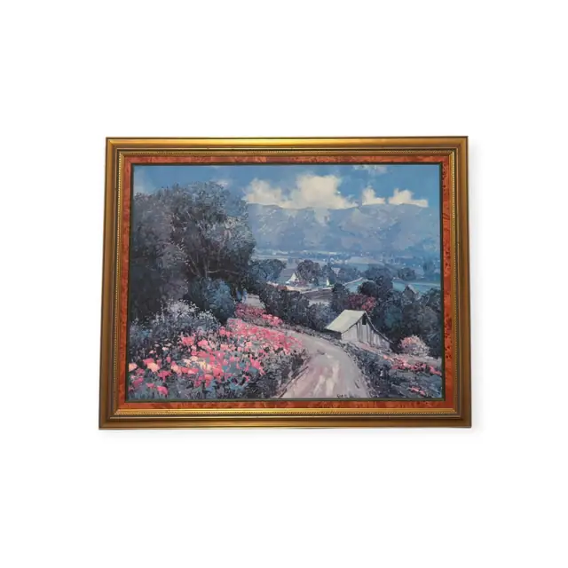
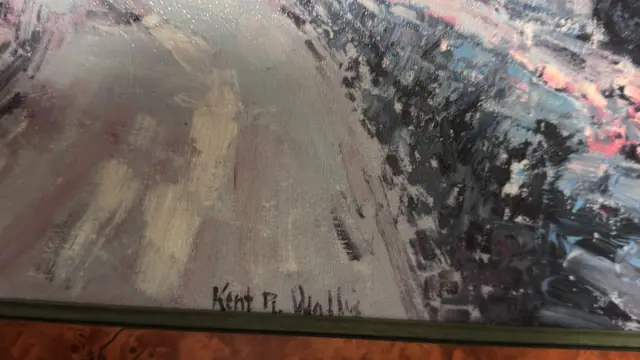
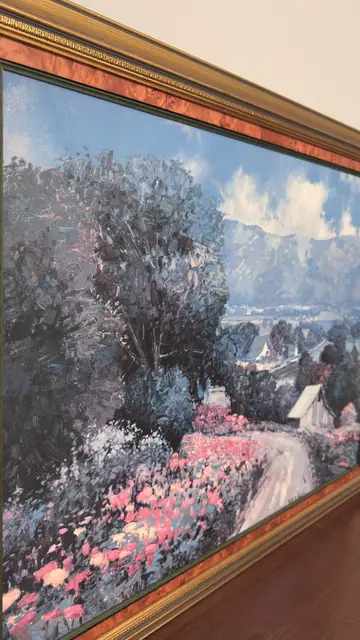
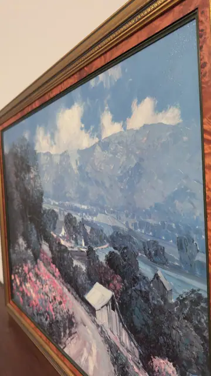

Paintings & Prints
Kent R. Wallis Blossoming Mountain Valley Oil, Signed, Framed
Kent R. Wallis · late 20th century
Price Upon Request




About the Item
Kent R. Wallis. A high-key impressionist landscape: a pale dirt lane curves in from the lower right past banks of rose-pink and magenta blossom and dark blue-green trees toward a cluster of small white-roofed houses, with hazy violet mountains and a brilliant blue sky of piled white cumulus above. The paint is laid on thickly with a loaded brush and palette knife, so the blossom and clouds stand in visible ridges of impasto. Colour is cool and saturated - cobalt, lavender, white and hot pink. Medium: oil on canvas. Signed lower centre-left of the canvas, in dark paint, reading "Kent R. Wallis". Inscribed on the reverse or mount: Kent R. Wallis. Condition: No visible damage; impasto intact; some specular glare off the paint surface in the raking views.
About the Artist
Kent R. Wallis (born 1945) is an American impressionist from Utah whose flowering gardens, orchards and mountain valleys are worked in thick, glowing colour.
Details
- Creator:
- Kent R. Wallis
- Creation Year:
- late 20th century
- Dimensions:
- Height: 29.5 in (74.93 cm)
Width: 37.0 in (93.98 cm)
outside of frame - Medium:
- oil on canvas
- Period:
- 20Th
- Condition:
- Offered in the condition shown in the photographs.
- Reference Number:
- VO-106
- Documentation:
- no certificate or label photographed; the back was not shown
- Gallery Location:
- Kent R. Wallis